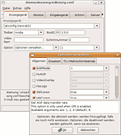

xorg-edit
Archivierte Anleitung
Dieser Artikel wurde archiviert, da er - oder Teile daraus - nur noch unter einer älteren Ubuntu-Version nutzbar ist. Diese Anleitung wird vom Wiki-Team weder auf Richtigkeit überprüft noch anderweitig gepflegt. Zusätzlich wurde der Artikel für weitere Änderungen gesperrt.
Achtung!
Von der Verwendung von xorg-edit für neuere Ubuntu-Versionen ab 8.04 Hardy Heron wird dringend abgeraten! Im schlimmsten Fall erhält man nach Verwendung von xorg-edit eine Konfiguration, mit der der XServer nicht mehr startet!
Zum Verständnis dieses Artikels sind folgende Seiten hilfreich:
Ein Terminal öffnen, optional
Einzelne Pakete manuell installieren, optional
Archive entpacken, optional
Pakete aus dem Quellcode erstellen, optional
Einleitung¶
 xorg-edit 
 ist eine grafische Oberfläche, um die Konfigurationsdatei xorg.conf des XServers zu bearbeiten. Das Programm überprüft dabei beim Einlesen und vor dem Speichern die Syntax der Datei und weist auf evtl. Fehler hin. Eine manuelle Bearbeitung (mit etwaigen Tippfehlern) der Datei ist so nicht mehr notwendig!
ist eine grafische Oberfläche, um die Konfigurationsdatei xorg.conf des XServers zu bearbeiten. Das Programm überprüft dabei beim Einlesen und vor dem Speichern die Syntax der Datei und weist auf evtl. Fehler hin. Eine manuelle Bearbeitung (mit etwaigen Tippfehlern) der Datei ist so nicht mehr notwendig!
Diese Anleitung beschreibt nur die Installation und Einrichtung von xorg-edit, wie man damit die Konfigurationsdatei ändert, steht in dieser Anleitung.
Features¶
Unterstützung der meist benutzten XServer-Optionen und Einträge
Unterstützung von xml-Treiberdateien
Test der aktuellen Konfiguration, ob der XServer startet
Backup der alten Datei beim Speichern mit Datum und Zeit
integrierter Modeline-Generator
Erkennung der Monitorwerte für DisplaySize und Wiederholraten
Deutsch und Englisch als Sprache
Installation¶
Es gibt verschiedene Arten der Installation. Auf der Downloadseite findet man verschiedene Dateien. Methode 4 ist eigentlich nur dann zu benutzen, wenn die vorkompilierten Pakete/Dateien nicht funktionieren oder die eigene Architektur nicht unterstützt wird.
Vorbereitung¶
Zuerst müssen die Pakete
libwxgtk2.6-0 (universe, [2])
xserver-xorg
installiert [1] werden. Dieses stellt die Elemente für die grafische Oberfläche und manche Sonderfunktionen zur Verfügung.
Methode 1: Installation per deb-Paket¶
Hinweis!
Fremdpakete können das System gefährden.
Am einfachsten ist es, man lädt sich von der Downloadseite oben das aktuelle deb-Paket herunter und installiert dieses wie unter [4] beschrieben. Das Programm kann dann von überall mit
xorg-edit
gestartet werden.
Nach der Installation des deb-Paketes lässt sich xorg-edit über den Menüeintrag unter
"System -> Systemverwaltung -> XServer-Xorg" (ab Ubuntu 7.10 "Gutsy Gibbon")
"System -> Administration -> XServer-Xorg" (bis Ubuntu 7.04 "Feisty Fawn")
starten.
Methode 2: Vorkompilierte Datei¶
Wer dem deb-Paket nicht vertraut oder bei wem es nicht funktioniert, kann die die für i386-Architekturen vorkompilierte Binary auf der Downloadseite (xorg-edit_VERSION_bin) nehmen. Dieses einfach herunterladen und entpacken [5]. Danach öffnet man ein Terminal [3] und geht in das entpackte Verzeichnis xorg-edit, wo man mit
./xorg-edit
das Programm ausführen kann.
Methode 3: Installation aus dem Quellcode¶
Vor dem Kompilieren [6] muss noch das Paket
libwxgtk2.6-dev (universe, [2])
installiert [1] werden. Danach reicht es, das Quellpaket (xorg-edit_VERSION_src) herunterzuladen und den Quellcode im Ordner sources zu kompilieren [6]. Ein ./configure ist dabei nicht notwendig, der Standardinstallationsort ist /usr/local.
Systemweit einrichten¶
Hat man Methode 3 oder 4 gewählt, erstellt man am besten noch einen Verweis, damit man xorg-edit auch von überall ausgeführt kann:
cd /usr/local/bin sudo ln -sf /usr/local/lib/xorg-edit/xorg-edit xorg-edit
Danach ist das Programm für jeden von überall ausführbar.
Programmstart¶
Startet man das Programm, wird automatisch versucht die Datei /etc/X11/xorg.conf zu öffnen. Existiert die Datei nicht, wird nachgefragt, ob man eine andere Datei öffnen möchte.
Hinweis:
Die folgenden Zeilen sind nur bei den Installationsmethoden 3 und 4 interessant. Bei den ersten beiden Methoden wird xorg-edit automatisch immer als Root gestartet und auch ein Menü-Eintrag hierfür angelegt.
Start mit Root-Rechten¶
Um das Programm mit Root-Rechten zu starten (Dies ist nötig, um die Konfigurationsdatei bearbeiten zu können!), gibt man einfach
sudo xorg-edit
ein.
Achtung!
Bei einem Start ohne Root-Rechte kann man zwar Einstellungen vornehmen, aber nicht unter /etc/X11/xorg.conf speichern. Möchte man die Einstellungen dennoch nicht verlieren, kann man die Datei per "Datei -> Speichern unter" im Home-Verzeichnis speichern, das Programm beenden und erneut als Root starten. Mit "Datei -> Öffnen" und "Datei -> Speichern unter" kann man dann die geänderte Konfigurationsdatei laden und unter /etc/X11/xorg.conf speichern.
Root-Skript erstellen¶
Da es sinnvoll ist xorg-edit immer mit Root-Rechten auszuführen, kann man auch das folgende Skript benutzen. Dieses einfach herunterladen, ein Terminal öffnen [3] und dort
sudo cp xorg-edit.sh /usr/local/bin/xorg-edit sudo chmod 755 /usr/local/bin/xorg-edit
eingeben. Der erste Befehl überschreibt den vorherigen Link mit der Datei. Der zweite Befehl setzt die Ausführrechte.
Root-Starter anlegen¶
Wem das zuviel Umstand ist, kann sich auch einfach im Panel oder auf dem Desktop einen Starter für das Programm anlegen:
Name: xorg-edit
Befehl: gksu xorg-edit (GNOME / Xfce) bzw. kdesudo xorg-edit (KDE ab Gutsy Gibbon, für ältere Versionen kdesu xorg-edit)
Typ: Anwendung
So erhält man immer eine grafische Abfrage für das Passwort.
Konfigurationsdateien¶
Es gibt zwei Arten von Konfigurationsdateien:
Zum einen Dateien list.xml, die einfach nur untereinander diverse Treiber auflisten. Diese werden dann beim jeweiligen Gerät zur Auswahl angeboten. Man kann aber auch weiterhin einen Treiber frei eingeben.
Desweiteren können Treiberdateien existieren, die den Namen des Treibers tragen, also z.B. radeon.xml oder nvidia.xml.
Das Optionsverzeichnis¶
Im Optionenverzeichnis (in der Regel /usr/local/lib/xorg-edit/options/) können zwei Verzeichnisse devices und inputdevices existieren, in denen nach den Dateien gesucht wird. Existiert also eine Datei /usr/local/lib/xorg-edit/options/devices/list.xml, so werden diese Treiber darin zur Grafiktreiberauswahl im Programm angeboten.
In diesen beiden Verzeichnisses liegen auch die oben erwähnten Treiberdateien. Die Grafikkartentreiber natürlich unter devices, die für Eingabegeräte in inputdevices.
Sollte eines der Verzeichnisse oder Dateien nicht existieren, kann man diese einfach anlegen.
Treiberdateien¶
Eine Beispieldatei (hier radeon.xml) könnte so aussehen:
1 2 3 4 5 6 7 8 9 10 11 12 13 14 15 16 17 18 19 20 21 22 | <section name="general"> <option name="SWcursor" value="boolean" comment="Selects software cursor."> <default>false</default> </option> <option name="AGPMode" value="integer" strict="true" comment="Set AGP data transfer rate"> <argument>1</argument> <argument>2</argument> <argument>4</argument> <argument>8</argument> <default>4</default> <description>Set AGP data transfer rate (used only when DRI is enabled).</description> </option> </section> <section name="advanced"> <option name="Dac6Bit" value="integer"> <default>0x1E</default> </option> </section> <section name="dual"> <option name="VideoOverlay" value="boolean"> </option> </section> |
Die Syntax ist eigentlich leicht verständlich. Jede Option fängt mit einem <option>-Tag an uns steht in den <section>-Tags. Hierbei sind die Sektionen general, advanced und dual zulässig. Bei den Optionen ist der Name zwingend erforderlich, die anderen Angaben freiwillig. Folgende Angaben gibt es:
name (erforderlich): Der Optionsname wie er später auch in der xorg.conf benutzt wird.
value (optional): Kann sein
boolean: Argumente (siehe unten) sind nicht nötig udn werden ignoriert. Die Werte können entweder 1, on, true oder yes bzw. 0, off, false, no sein. Es wird immer überprüft, ob der Optionswert stimmt.
integer: Eine Dezimal- oder Hexadezimalzahl. Es wird immer überprüft, ob der Optionswert stimmt.
string: Dies ist der Standard, auch wenn keine value-Angabe gemacht wird. Hier findet keine Überprüfung statt.
strict (optional): Kann nur true oder false sein.
true: Es sind für den Optionswert nur die Argumente aus der Liste zugelassen, die dazu angegeben wurden (siehe unten).
false: Standard, auch wenn die strict-Angabe fehlt. Die Argumentliste wird nicht überprüft.
comment (optional): Optionaler Kommentar. Wird später im Programm angezeigt.
Eine Option muss mit dem </option>-Tag aufhören. In einer Option sind folgende Angaben erlaubt:
<default> (optional): Gibt den Standardwert an, der benutzt wird, wenn diese Option hinzugefügt wird. Es ist nur ein default-Wert pro Option zugelassen.
<argument> (optional): Gibt eine Argumentenliste an. Diese erscheint dann als DropDown-Liste im Programm zur Auswahl. Wenn die strict-Angabe gemacht wurde (siehe oben), dann darf ein Optionswert nur Werte aus dieser Liste annehmen.
<description> (optional): Mehrzeilige genauere Beschreibung einer Option.
- Erstellt mit Inyoka
-
 2004 – 2017 ubuntuusers.de • Einige Rechte vorbehalten
2004 – 2017 ubuntuusers.de • Einige Rechte vorbehalten
Lizenz • Kontakt • Datenschutz • Impressum • Serverstatus -
Serverhousing gespendet von